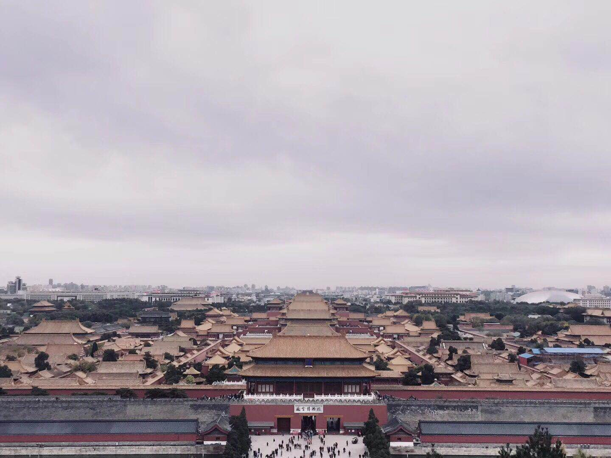
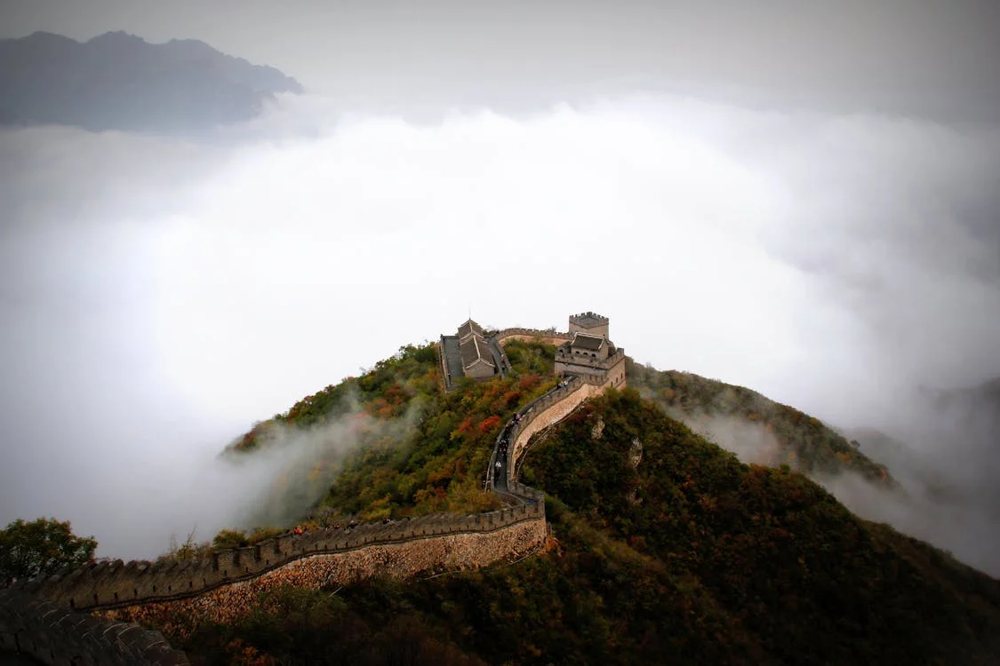
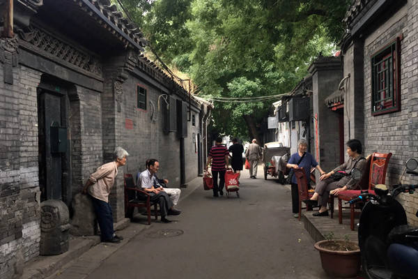
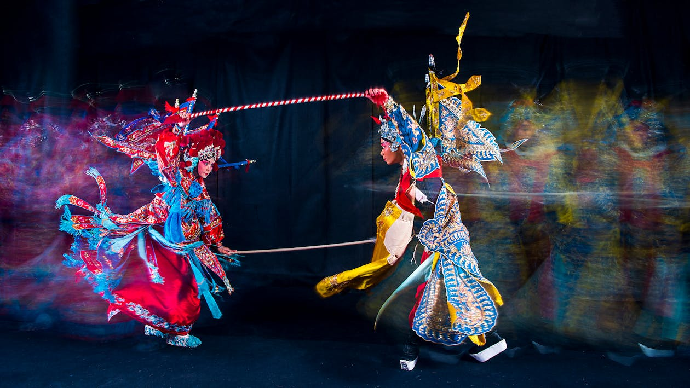
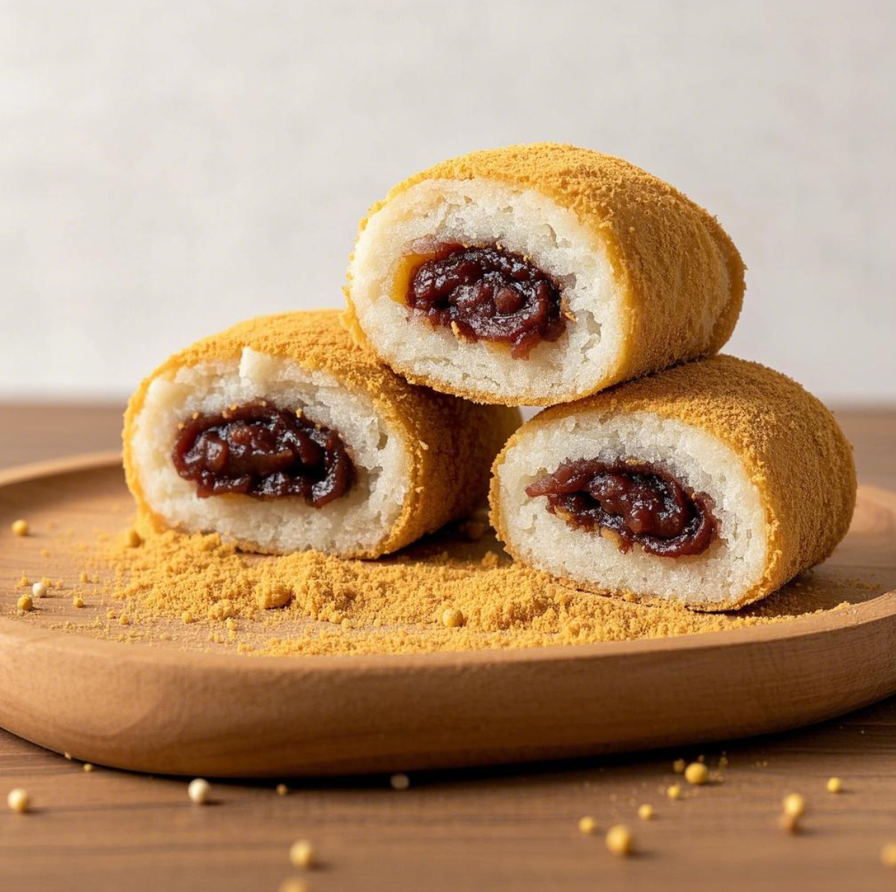
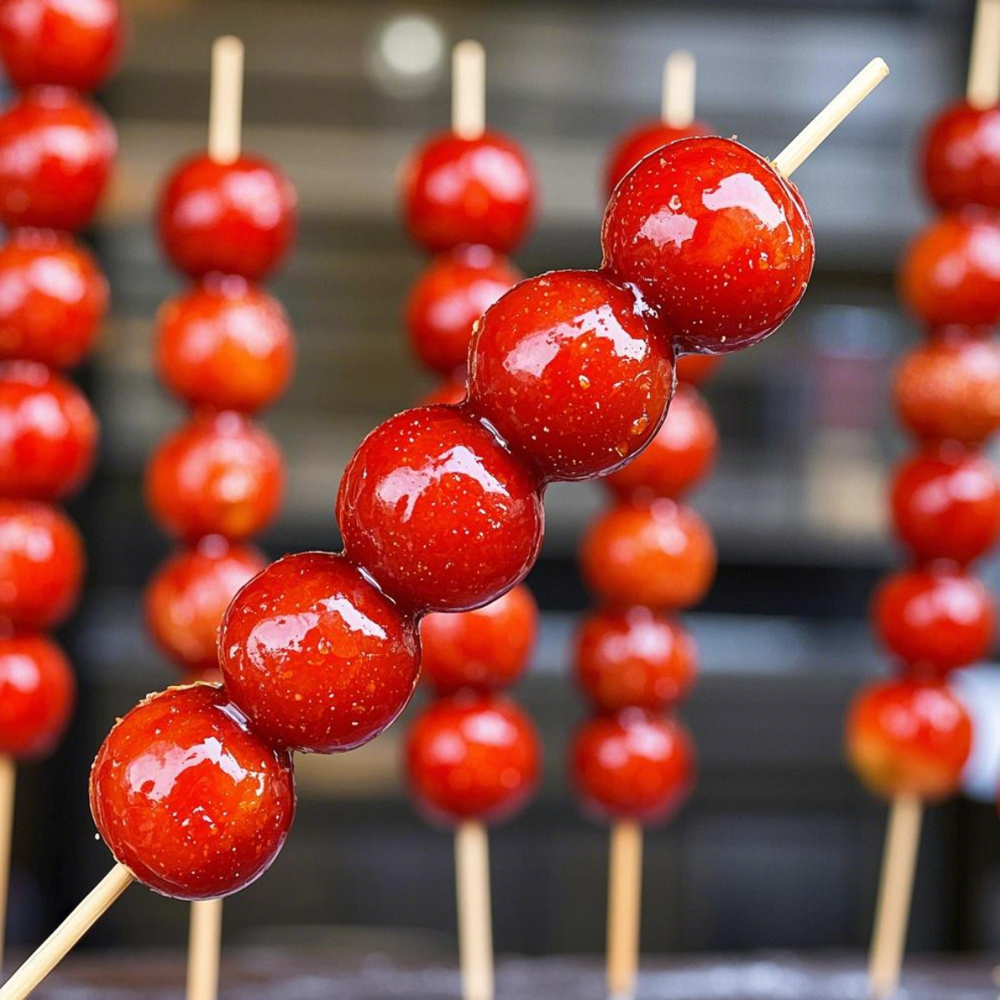

Beijing: Where Ancient History Meets Modern Marvels
Beijing, the capital of China, is a city that effortlessly blends the grandeur of ancient dynasties with the dynamism of modern life. It's home to world-famous historical sites like the Great Wall and the Forbidden City, testaments to China's rich imperial past. Here, you'll find traditional courtyard homes in hutongs nestled alongside towering skyscrapers and bustling commercial districts. As a cultural heart of China, Beijing offers a wealth of cultural experiences, from the captivating artistry of Peking Opera to the lively performances of crosstalk. And when it comes to food, Beijing tantalizes with unique delicacies like Peking Roast Duck, Poached Tripe, and Zhajiangmian, and its snack streets are a paradise for food lovers. A stroll through Beijing offers a unique opportunity to witness the city's historical heritage and its vibrant contemporary spirit, a combination that draws visitors from around the globe.
Beijing Highlights
Getting There and Away
By Air
Beijing is served by two major international airports: Beijing Capital International Airport and Beijing Daxing International Airport. You can find direct flights to Beijing from many cities worldwide. To travel between the city center and the airports, you have several convenient options: airport shuttle buses, taxis, or the subway.
By Train
China's extensive railway network connects Beijing to other cities across the country, with both high-speed and regular trains. High-speed trains are a popular choice for long-distance travel, offering speed and comfort. Ticket prices for high-speed trains vary depending on your destination and the class of seat you choose. For example, a second-class seat from Beijing to Shanghai costs approximately 550 yuan, while a second-class seat from Beijing to Xi'an costs around 515 yuan. You can purchase tickets online through the official 12306 website (http://www.12306.cn/en) or at ticket windows in train stations. Keep in mind that high-speed train tickets go on sale two weeks before the departure date. It's advisable to book your tickets in advance, especially during peak travel seasons like holidays.
Getting Around Beijing
Subway/Bus
Beijing boasts a comprehensive subway network, making it easy to navigate the city. For convenient travel on both the subway and buses, consider using the Alipay transportation code. The bus system is also a convenient option, and you can use map apps like Baidu Maps or Gaode Maps (both offer English-language interfaces) to plan your routes.
Taxi/Ride-hailing
You can hail taxis on the street, or use ride-hailing apps (such as Didi or Gaode Maps, the Chinese equivalent of Uber) to book a ride. Ride-hailing apps are generally recommended to avoid misunderstandings about your destination and to help ensure the driver takes the most direct route. However, be aware that traffic congestion can be heavy during morning and evening rush hours.
Must-See Attractions & Cultural Experiences
The Forbidden City (The Palace Museum)
The Forbidden City, also known as the Palace Museum, is the largest and most complete ancient palace complex in the world. It offers a glimpse into the opulence and grandeur of China's imperial past. Located at the heart of Beijing's central axis, it served as the imperial palace for the Ming and Qing dynasties. Its construction began in 1406 and was completed in 1420.
The Great Wall
The Great Wall is a world-renowned wonder and a symbol of China's strength and resilience. Its history dates back to the Warring States Period, when the State of Yan first built fortifications to defend against invaders. During the Qin Dynasty, these walls were connected and expanded, including the sections now within the Beijing municipality. Today, the most visited sections are primarily remnants from the Ming Dynasty, such as the Badaling and Mutianyu sections.
The Summer Palace
The Summer Palace, originally built in 1750 during the Qianlong reign of the Qing Dynasty and initially named "Qingyi Garden," is a sprawling imperial garden. Situated at No. 19, Xinjian Gongmen Road, Haidian District, Beijing, it covers an area of 3.009 square kilometers. Longevity Hill and Kunming Lake are its central features, creating a harmonious blend of natural beauty and imperial architecture. The Summer Palace is recognized as one of China's Four Great Gardens, alongside the Mountain Resort in Chengde, the Humble Administrator’s Garden, and the Lingering Garden. In 1998, it was designated a UNESCO World Heritage Site.
Hutong Tour
Hutongs, the traditional alleyways of Beijing, are the city's historical veins, preserving its rich history and culture. These narrow lanes, lined with siheyuan (traditional courtyard houses), began to take shape during the Yuan Dynasty. The architectural details of the hutongs, such as the door piers and screen walls, showcase the charm of traditional Chinese culture.
Peking Opera
Peking Opera is a cherished traditional art form that embodies the essence of Chinese theatrical performance. It combines singing, recitation, acting, and martial arts, characterized by elaborate costumes, distinctive facial makeup, and captivating performances. With a vast repertoire of historical dramas, mythological legends, and more, Peking Opera offers a fascinating glimpse into Chinese storytelling and artistry. You can experience Peking Opera at dedicated theaters like the Mei Lanfang Grand Theatre or in a more relaxed setting at some of Beijing's traditional teahouses.
Beijing's Delicious Food
Peking Duck
Peking Duck is arguably the most famous culinary specialty of Beijing. This dish is celebrated for its crispy skin and tender meat. Popular restaurants where you can savor authentic Peking Duck include Quanjude and Dadong. It is traditionally served with thin pancakes, scallions, cucumbers, and sweet bean sauce. If you prefer to skip the scallions, you can certainly do so.

Zhajiangmian (Noodles with Soybean Paste)
Zhajiangmian is a classic noodle dish from old Beijing, featuring a rich meat sauce. Be aware that the noodle portions can be quite generous, so consider your appetite when ordering. (Note for those with gluten allergies)
Shuanyangrou (Instant-Boiled Mutton Hot Pot)
Shuanyangrou, or mutton hot pot, is a popular and warming dish, especially during winter. However, some of the seasonings can be quite spicy. If you are sensitive to spicy food, be sure to let your server know when ordering. Also, travelers with specific religious beliefs or dietary restrictions should be mindful that this dish features mutton.
Jiaoquan (Fried Dough Rings)
Jiaoquan are deep-fried dough rings with a distinctive deep yellow color and bangle-like shape. They are known for their crispy and fragrant texture and unique flavor, making them a beloved traditional food in Beijing. Jiaoquan are often enjoyed with Douzhi or sandwiched in a sesame seed cake.
Douzhi (Mung Bean Milk)
Douzhi is a unique Beijing snack with a greenish-gray color and a pungent, sour smell that can be off-putting to first-time tasters. However, those who acquire a taste for it appreciate its lingering sour and fragrant flavor. It is traditionally served with finely shredded spicy pickled mustard tuber and Jiaoquan.
Lvdaogun (Rolling Donkey/Fried Chop Rice Cake)
Lvdagun, also known as Rolling Donkey or Fried Chop Rice Cake, gets its name from the way it's prepared, which is said to resemble a donkey rolling in yellow dust. The main ingredients are yellow rice flour, soybean flour, and red bean paste. The finished product is coated in soybean flour, giving it a golden-yellow appearance. Lvdaogun offers a delightful combination of fragrant bean flavor, sweet filling, and a soft, sticky, glutinous texture. It is a traditional snack enjoyed by people of all ages. (Note for those with bean and grain allergies)
Tanghulu (Candied Fruit on a Stick)
Tanghulu is a traditional Chinese snack consisting of fruits like hawthorns and strawberries skewered on bamboo sticks and coated in a hardened sugar syrup. The sugar coating is crystal clear, and the snack offers a delicious sweet and sour taste. Tanghulu is a common winter treat in Beijing.
Chaogan (Fried Liver)
Chaogan is a flavorful Beijing dish featuring shiny, dark red soup, tender liver, and fatty intestines. It is rich in flavor without being greasy, and the soup has a thick but smooth consistency. The main ingredients are pig liver and pig large intestine. It is typically eaten with steamed buns, and there's a unique way to enjoy it: by slurping it from the edge of the bowl.
Baodu (Quick-Boiled Tripe)
Baodu is a dish featuring quick-boiled beef or mutton tripe. The tripe is prepared in shreds or leaves, resulting in a crispy and tender texture that melts in your mouth. It is served with a fragrant sesame paste seasoning, creating a rich and mellow flavor. When enjoying Baodu, Beijingers pay close attention to the cooking time to achieve the perfect crispness and tenderness of the tripe.
Wandouhuang (Pea Flour Cake)
Wandouhuang is a traditional Beijing snack with a light yellow color and a delicate, smooth appearance. Its defining characteristic is its sweet taste and melt-in-your-mouth texture, providing a cool and refreshing sensation with a rich pea fragrance. Wandouhuang is a popular choice for a refreshing treat in summer.
Where to Stay in Beijing
Wangfujing Area
Staying in the Wangfujing area puts you in the heart of the city, with convenient access to transportation, shopping, and attractions like the Palace Museum. Hotel prices tend to be higher here, but you'll find a range of options from luxury hotels like the Waldorf Astoria Beijing to budget-friendly choices like the Hanting Hotel.
Qianmen Area
The Qianmen area offers a strong sense of old Beijing charm, with its many hutongs and local snack streets. You can find a good selection of characteristic homestays at moderate prices, allowing you to experience traditional Beijing life. This area is also conveniently located near attractions such as Tiananmen Square.
Near Subway Stations
Staying near subway stations, especially those on Line 2 (the loop line), provides excellent connectivity to various parts of the city and its attractions. Chain hotels like Home Inn and 7 Days Inn offer budget-friendly accommodations with good value for your money.
Weather in Beijing
Spring and Autumn (March – May, September – November)
Spring and autumn are generally considered the most pleasant times to visit Beijing, with comfortable temperatures that are ideal for sightseeing. During these seasons, you'll likely be comfortable wearing long-sleeved shirts and light jackets.
Summer (June – August)
Summer in Beijing is hot and rainy. Pack light, breathable clothing such as shorts and short-sleeved shirts. It's also essential to bring rain gear. If you plan to spend time in air-conditioned places like shopping malls or museums, a light jacket is a good idea.
Winter (December – February)
Winter in Beijing is cold and dry, so you'll need to pack accordingly. Warm clothing is essential, including thick down jackets, sweaters, thermal pants, scarves, hats, and gloves. If you're visiting outdoor locations with strong winds, such as the Great Wall, dress in extra layers to stay warm.
Beijing's Must-Do List
- Explore the Forbidden City (Palace Museum): Immerse yourself in the grandeur of China's imperial past.
- Walk along the Great Wall (Badaling or Mutianyu): Experience the awe-inspiring scale of this ancient wonder.
- Visit the Bird's Nest and Water Cube: Marvel at the iconic venues of the 2008 Beijing Olympic Games, especially beautiful when illuminated at night.
- Tour Peking University or Tsinghua University: Get a feel for the academic atmosphere of China's top universities (advance reservations are usually required through their official websites or WeChat accounts).
- Savor Authentic Peking Roast Duck: Indulge in Beijing's signature dish at a renowned restaurant.
- Relax in a Hutong Teahouse: Enjoy a cup of tea and soak up the traditional ambiance of old Beijing.
- Attend a Peking Opera Performance: Discover the beauty and artistry of this traditional Chinese theatrical form.
Classic Beijing Itineraries
Route 1: Two-Day Imperial Highlights
Day 1: Morning Arrival and City Center Exploration
Morning: Upon your morning arrival in Beijing, check into your hotel near Tiananmen Square. After settling in, head straight to Tiananmen Square to visit the Monument to the People’s Heroes. If time permits, you can also explore the Great Hall of the People.
Afternoon: Enter the Forbidden City through the Meridian Gate and walk along the central axis, admiring the magnificent halls such as the Hall of Supreme Harmony, the Hall of Central Harmony, and the Hall of Preserving Harmony. Then, explore the palaces in the eastern and western wings. Exit from the Gate of Divine Might and go to Jingshan Park. Climb up to the Wanchun Pavilion for a panoramic view of the Forbidden City and the Beijing cityscape.
Evening: Have dinner at a local restaurant near Wangfujing Street. Afterward, take a stroll along Wangfujing Street, sampling traditional Chinese snacks such as baozi (steamed buns), jiaozi (dumplings), and tanghulu (candied fruit on a stick).
Day 2: Temple of Heaven and Departure
Morning: Go to the Temple of Heaven. Admire its unique circular design and the beautiful surrounding gardens where emperors of the Ming and Qing dynasties performed sacrifices and prayed for good harvests.
Afternoon: If you have some time before your departure, you can explore the nearby Nanluoguxiang hutong area. It’s filled with traditional courtyard houses, cafes, and handicraft shops. Then, head to the airport or train station for your journey home.
Route 2: Three-Day Imperial Beijing Exploration
Day 1: Morning Arrival and Forbidden City
Morning: Arrive in Beijing and check into your hotel. Then, make your way to the Forbidden City. Enter through the Meridian Gate and start your exploration along the central axis, visiting the Hall of Supreme Harmony, Hall of Central Harmony, and Hall of Preserving Harmony.
Afternoon: Continue exploring the Forbidden City, including the palaces in the eastern and western wings. Exit from the Gate of Divine Might and head to Jingshan Park. Climb up to the Wanchun Pavilion to enjoy the view.
Evening: Have dinner near Wangfujing Street and then take a walk along the street to experience the local food and shopping atmosphere.
Day 2: The Great Wall and Ming Tombs
Morning: Take a bus or hire a car to the Badaling Great Wall. Walk along the wall, enjoying the magnificent view of it winding through the mountains.
Afternoon: Proceed to the Ming Tombs. Visit the Changling Tomb, the largest and most well-preserved of the Ming Tombs, to see the grand sacrificial halls and underground palaces.
Evening: Return to the city and have dinner at a restaurant in the Huogongdian area, famous for its Beijing-style hot pot.
Day 3: Temple of Heaven and Hutongs before Departure
Morning: Go to the Temple of Heaven. Appreciate its architecture and historical significance.
Afternoon: Explore the Beijing hutongs, perhaps take a rickshaw ride in Nanluoguxiang. Have an early dinner at a local hutong restaurant. Then, head to the airport or train station for your departure.
Route 3: Four-Day Comprehensive Beijing Experience
Day 1: Morning Arrival and City Center
Morning: Arrive in Beijing and check in. Head to Tiananmen Square. Visit the Monument to the People’s Heroes, the Great Hall of the People, and if you’re interested, the National Museum of China.
Afternoon: Enter the Forbidden City through the Meridian Gate. Explore the central axis and then the side palaces. Exit from the Gate of Divine Might and visit Jingshan Park.
Evening: Have dinner near Wangfujing Street and enjoy the street food and shopping.
Day 2: The Great Wall and Ming Tombs
Morning: Travel to the Badaling Great Wall. Walk along the wall, soak in the historical atmosphere, and enjoy the views.
Afternoon: Proceed to the Ming Tombs. Visit the Changling Tomb and learn about the burial culture of the Ming Dynasty.
Evening: Return to the city and have a hot pot dinner in the Huogongdian area.
Day 3: Summer Palace and Temple of Heaven
Morning: Go to the Summer Palace. Walk around the Long Corridor, visit the Marble Boat, and enjoy the beautiful lakes and palaces.
Afternoon: Head to the Temple of Heaven. Admire its unique architecture and the peaceful gardens.
Evening: Have dinner at a local restaurant near the Temple of Heaven and explore the nearby area.
Day 4: Hutongs and Departure
Morning: Explore Beijing hutongs. You can take a rickshaw ride in Nanluoguxiang or visit other hutong areas. Have lunch at a local hutong restaurant.
Afternoon: If you still have time, do some last-minute shopping or relax. Then, head to the airport or train station for your departure.
Route 4: Four-Day Modern and Historical Blend
Day 1: Morning Arrival and Tiananmen Square – Forbidden City
Morning: Arrive in Beijing and check into your hotel. Then, go to Tiananmen Square. Visit the Monument to the People’s Heroes and the Great Hall of the People.
Afternoon: Enter the Forbidden City through the Meridian Gate. Explore the palaces and historical relics. Exit from the Gate of Divine Might and consider visiting Jingshan Park.
Evening: Have dinner at Wangfujing Street and experience the bustling commercial atmosphere.
Day 2: Beijing National Stadium (Bird’s Nest) and Water Cube
Morning: Go to the Beijing National Stadium (Bird’s Nest) and the National Aquatics Center (Water Cube). Admire their unique architecture and learn about the 2008 Beijing Olympics. You can also visit the China Science and Technology Museum nearby.
Afternoon: Take a subway to the Summer Palace. Enjoy the peaceful scenery, including the Long Corridor and the Marble Boat.
Evening: Have dinner near the Summer Palace and then return to your hotel.
Day 3: The Great Wall at Mutianyu
Morning: Take a bus or a private car to the Mutianyu Great Wall. Hike along the wall or take a cable car up and down to enjoy the beautiful and less crowded view.
Afternoon: Have lunch at a local farmhouse and then return to the city.
Evening: Enjoy a Peking duck dinner at a famous restaurant like Quanjude or Da Dong.
Day 4: Temple of Heaven and Departure
Morning: Go to the Temple of Heaven. Appreciate its historical and architectural value.
Afternoon: If you have some free time before your departure, you can do some shopping or simply relax. Then, head to the airport or train station.